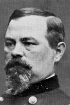

|

|

|
|
|
Irvin McDowell was born in Columbus, Ohio, on October 15,
1818. He attended the College de Troyes in France, and
graduated from West Point in 1839. He served on the Mexican
border before returning to the Military Academy to teach
tactics (1841-1845). During the Mexican War, he served on
the staff of General John E. Wool and was breveted captain
for gallant conduct at the battle of Buena Vista.
Thereafter, McDowell served in the office of the adjutant
general of the army.
While in Washington, McDowell made the acquaintance of
Salmon P. Chase, which would prove beneficial when the Civil
War started. Through Chase's intervention, he was appointed
a brigadier general in the Regular Army on May 14, 1861.
This was a disastrous decision, for McDowell had no command
experience and was put in charge of a half-trained army.
Political pressure forced him to advance his army against an
equally untrained Confederate force at Bull Run, Virginia,
where he was soundly defeated. McDowell was relieved in
March 1862 and placed in command of a corps in the Army of
the Potomac. Controversy surrounded most of his remaining
Civil War career. General George B. McClellan publicly
vented his dislike for McDowell and the fact that he was
protecting Washington while McClellan was trying to take
Richmond.
During McClellan's failure in the Peninsula campaign,
McDowell and the Third Corps of John Pope's Army of Virginia
faced the Confederacy once again at Bull Run, with similar
results. McDowell's conduct, along with Pope's, was severely
criticized. McDowell was brought before a court of inquiry
and exonerated, but for two years he was exiled. He was
assigned to command the Department of the Pacific on July 1,
1864, and remained in that post for a year, then was
reassigned to the Department of the East and South. McDowell
received a promotion to major general in 1872 through the
army's seniority system. In 1876, he returned to California
and took command of the Division of the Pacific. Retiring in
1882, McDowell remained in California and became the parks
commissioner of San Francisco. He died in that city on May
4, 1885.
Source: John T. Hubbell and James W. Geary,
Biographical Dictionary of the Union: Northern Leaders of
the Civil War (Westport, CT: Greenwood Publishing, 1995), 330.
|